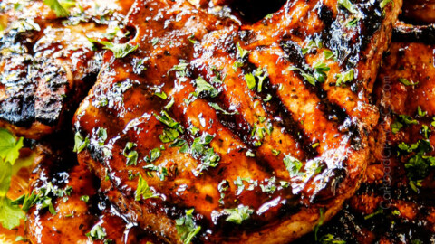

Description
A lot of purchased barbecue sauces are really high in sugar. If you need
to watch the amount of sugar in your diet, try grilling pork chops with
this flavorful rub, instead. The rub goes on in advance so the flavors can
penetrate the chops.
Ingredients
- 6 (5 ounce) boneless pork loin chops, cut 1-inch thick
- avocado cooking oil spray
- 1 ½ tablespoons smoked paprika
- 1 ½ teaspoons kosher salt
- ¾ teaspoon freshly ground black pepper
- ½ teaspoon onion powder
- ½ teaspoon granulated garlic
- ⅛ teaspoon cayenne pepper, or to taste
Steps
-
Combine smoked paprika, salt, pepper, onion powder, garlic, and cayenne
in a small bowl.
-
Pat chops dry with a paper towel and evenly distribute dry ingredient
mixture on front and back of each chop. With fingertips, lightly rub dry
ingredient mixture into the chops on both sides.
-
Place chops on a plate and cover with plastic wrap. Refrigerate for at
least 8 hours.
-
Remove rubbed chops from the refrigerator and allow to come to room
temperature, about 20 minutes.
-
While chops are getting to room temperature, clean the grate of an
outdoor gas grill and preheat to medium heat.
-
When the grill is ready, lightly spray chops with avocado oil spray.
-
Lightly oil the grill grates, place chops on the grill, and cook for
about 3 minutes. Rotate chops 90 degrees to create a criss-cross grill
pattern and continue grilling for 3 minutes. Turn chops and grill until
pork chops are no longer pink inside, about 4 minutes more. An
instant-read thermometer inserted into the center should read 145
degrees F (63 degrees C).
-
Remove to a serving platter and allow to rest under a foil tent, for
about 5 minutes. Serve warm.